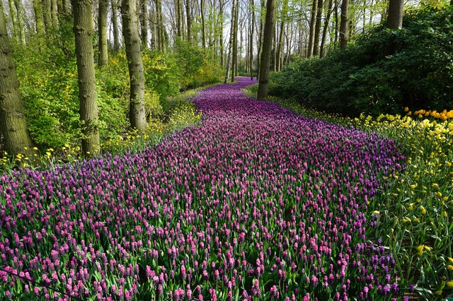
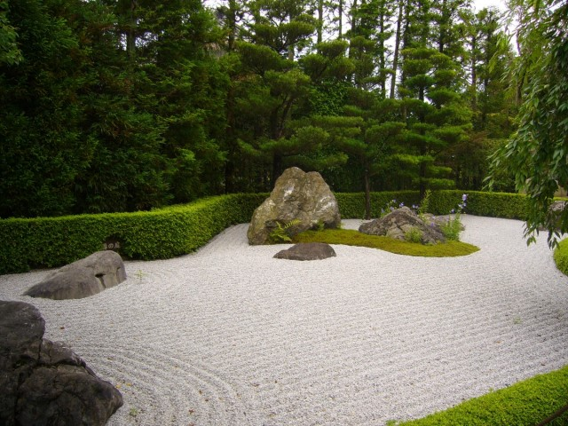
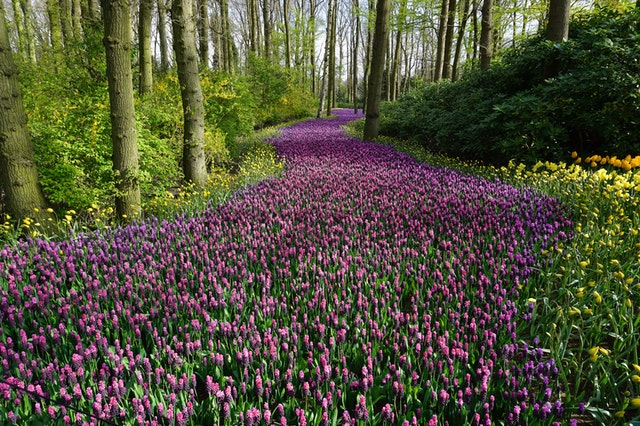
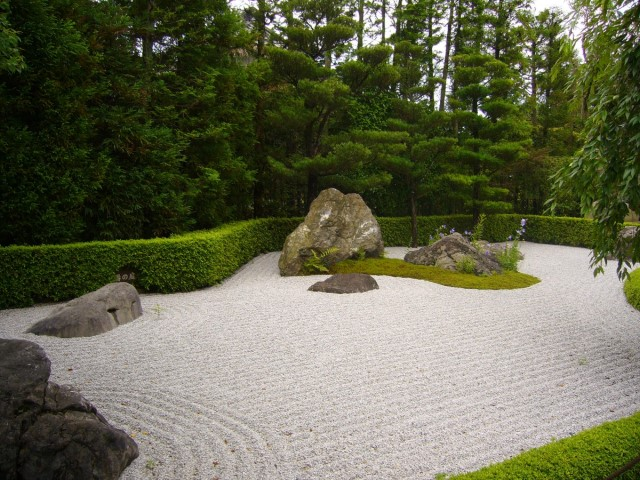

Paisajes de ensueño al alcance de todos
NUESTROS ÚLTIMOS TRABAJOS
 



Porqué nosotros
Nuestros jardines son creados con sensibilidad, pensados para tener estilo, gracia, practicidad y con la comodidad de adecuarse a tu presupuesto.
Nuestros jardines transmiten sensaciones únicas y despiertan los sentidos. Eso se debe a que cuando hacemos un jardín pensamos en él como profesionales del verde, pero en La Paisajista vamos más lejos, hacemos más que plantar árboles y césped. Hacemos jardines de diseño, no jardines pretenciosos, pero jardines bien planeados. Estudiamos cada centímetro de su parcela para hacer que el jardín que tienes en mente sea mejor de lo que esperabas. Que sea más funcional, más sostenible, más bonito, más sano, que tengas menos trabajo al cuidarlo, y que haga tu vida y la de los tuyos más verde. Nos involucramos totalmente porque nos apasiona lo que hacemos.
Con más de 20 años de experiencia transformando espacios abandonados y sin vida en verdaderos oasis de descanso y relajación, donde puedes descubrir con los tuyos el placer de disfrutar momentos únicos en el jardín.